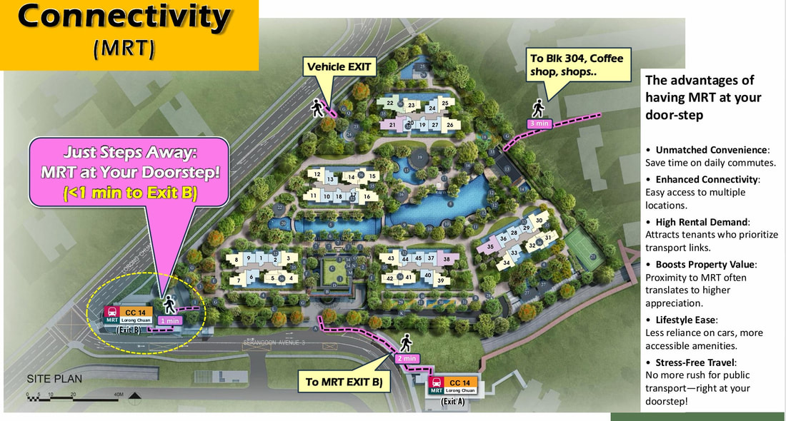
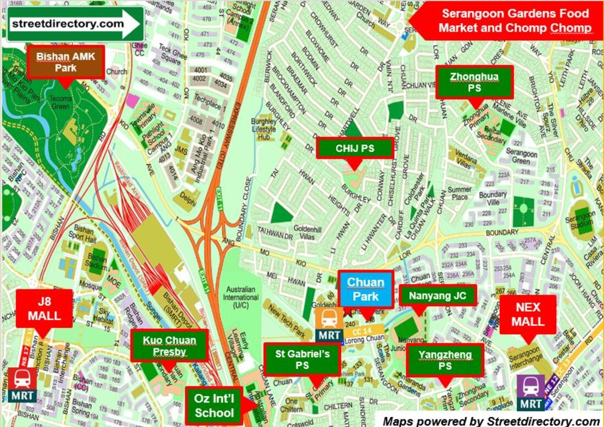
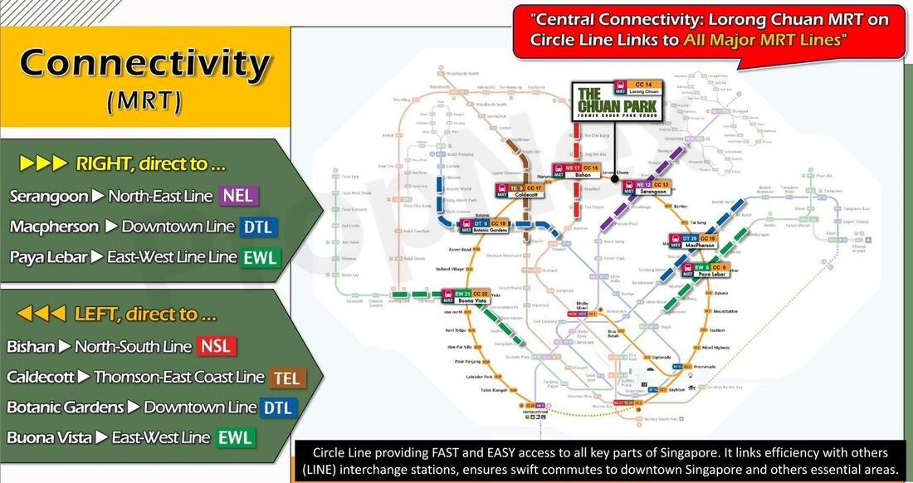
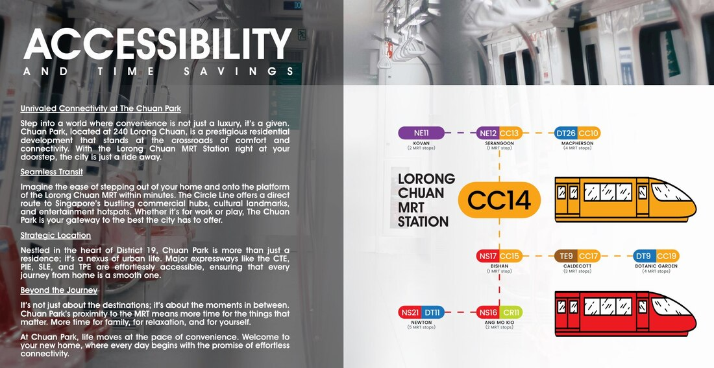
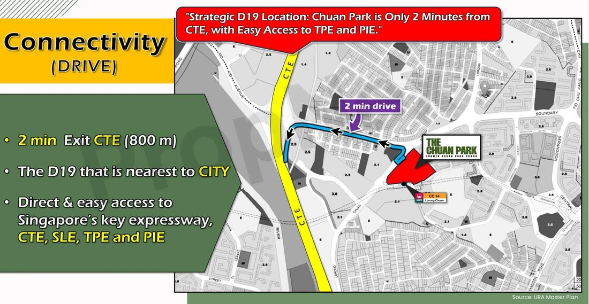
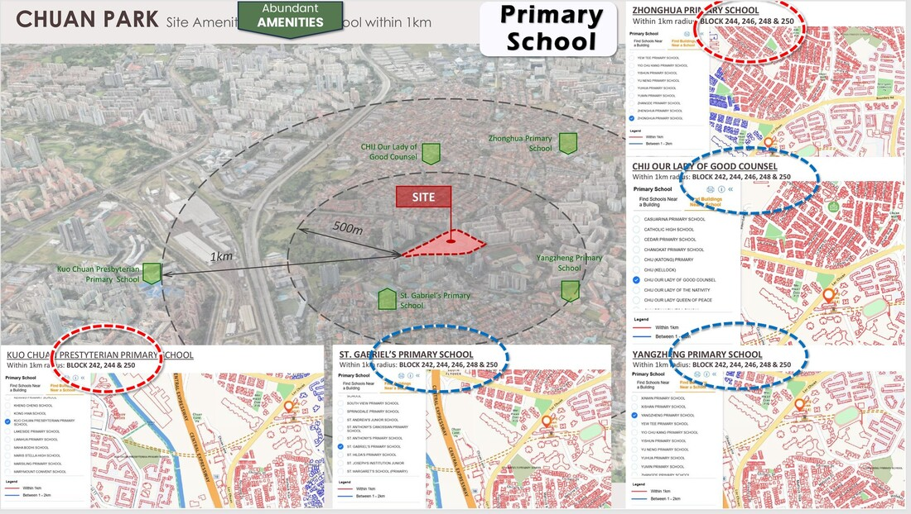

Why Should You Consider Chuan Park?
Chuan Park is the only family-oriented mega condo in Serangoon — doorstep to MRT, within 1km to 11 schools, surrounded by eateries and amenities in a matured estate.
Doorstep to MRT — 1 Stop to Bishan Junction 8 and Serangoon NEX
Chuan Park offers exceptional connectivity with MRT access at your doorstep. One stop gets you to Bishan Junction 8 and Serangoon NEX.
The Circle Line connects many MRT lines and is expected to be completed in 2025.

Rare — Within 1km to 11 Schools (5 Pri, 2 Sec, 1 JC, 3 Int'l)
Notable websites have ranked Yangzheng Primary as higher in popularity and academic excellence than many good schools.
More families are choosing to buy or rent properties near good schools to gain an upper hand in the Registration Exercise, child convenience, and future exit. Chuan Park is within 1km to 11 schools — from good primary schools and secondary schools, to NYJC and 3 international schools.
Strong pool of tenants beside Chuan Park from 3 international schools with an estimated 200 teachers and 5,500 Australian, UK and US students and parents working or living in Singapore.

Statistics show that condos near international schools make more money.
The ONLY Mega Condo in Serangoon (Over 400,000 sqft Land)
"Big is Better" — buyers prefer mega condo projects. Grand feeling, more space, choice of units, facilities and lower MCST fees.
Low Supply: Only 5 mega condos within 1km to a primary school and 200m to MRT.

Mega projects with over 900 units, TOPed from 2020 onwards, have shown strong profitability.
Ample Space and Facilities — Land Size Approx 6 Football Fields
Family-oriented development with zero one-bedroom units, 56% larger units.
Large land size with 916 units — more choices for home buyers with 2 to 5 bedrooms.

1,270 sqft of gym space and 2,500 sqft function room.
Surrounded by Eateries and Amenities
Chuan Park is located within a matured estate surrounded by eateries and shopping facilities.
Exit Strategy — Masterplan and 4 Future Smaller GLS Land Sites

Future GLS sites are built using Pre-Fab panels — cannot hack walls. Chuan Park is excluded because it was acquired through enbloc and not through GLS. This offers you and your future buyers extra flexibility to redesign your home.
Clementi GLS land size is 144,000 sqft with more than 500 units and Toa Payoh GLS land size is less than 169,000 sqft with 775 units.
Rare Pent-Up Demand Location
The last project in Lorong Chuan was launched around 2010, therefore the market — consisting of HDB upgraders and rightsizers from landed homes — waited 14 years for Chuan Park.

District 19 has the largest number of HDB upgraders.
How Will You Price a Rare Mega Condo That No Others Can Match in Singapore?
Chuan Park is the only family-oriented mega condo doorstep to MRT, within 1km to 11 schools, surrounded by eateries and amenities in a matured estate.
Which other condo can tick every box in the checklist above?
Statistics show tenants are willing to pay more to rent newer condos.